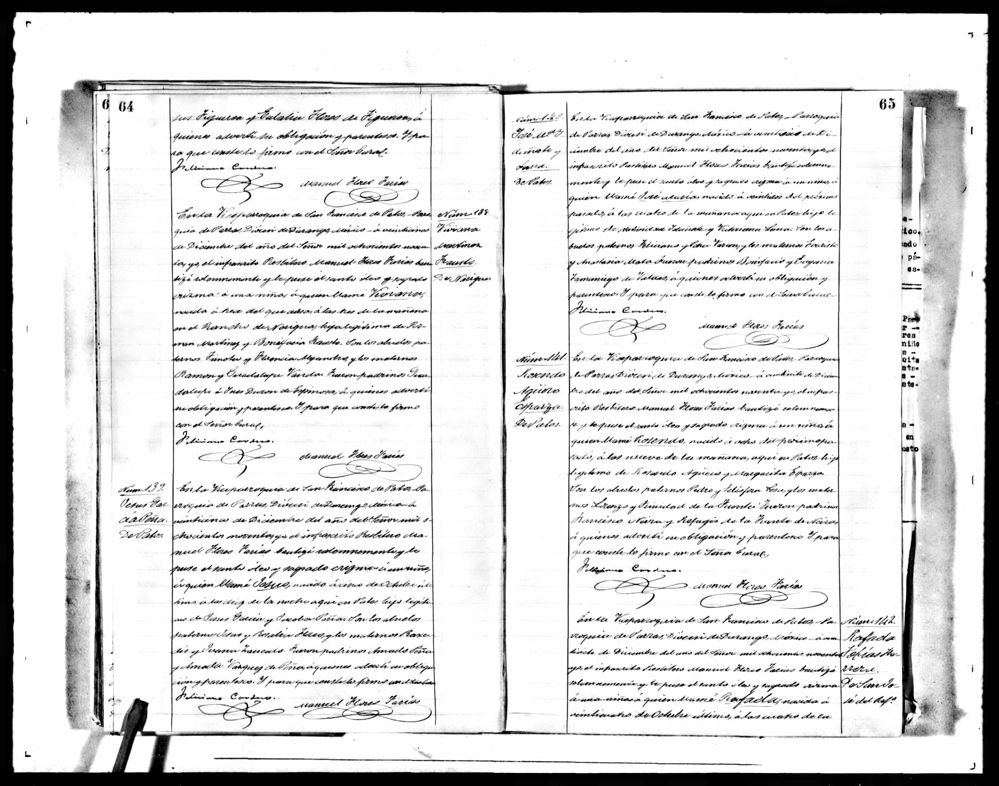

Hermano de Francisco. No es tronco directo de Javier; se guarda porque es hijo de los mismos Jesús García y Jacoba Peña.
Bautizo. Viceparroquia de San Francisco de los Patos, 21 de diciembre de 1894. Núm. 189

En la Viceparroquia de San Francisco de Patos, Parroquia de Parras, Diócesis de Durango, a veintiuno de diciembre del año del Señor mil ochocientos noventa y cuatro, el infrascrito presbítero Manuel Flores Farías bautizé solemnemente y le puse el santo óleo y sagrada crisma a un niño a quien llamé Jesús, nacido a las diez de la noche aquí en Patos, hijo legítimo de Jesús García y Jacoba Peña.
Son los abuelos paternos Jesús García y Rosalía Flores y los maternos Praxedis y Juana Saucedo.
Fueron padrinos Amado Peña y Amada Vázquez de Peña.
Feliciano Contreras. Manuel Flores Farías.
Hermano: Francisco, 1883 · Madre: Jacoba
Volver